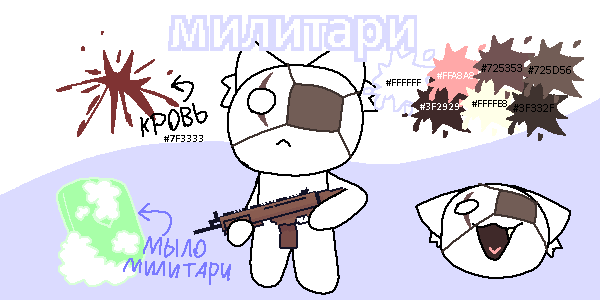

милитари

референс милитари
вид :: кот
ДР :: 15.07.2008
пол :: мужской
рост :: 140
вес :: 29
самый первый и решительный воин
инфо
является главным героем игры Untitled Shooter. он играет роль скина и главного персонажа в игре
как персонаж
милитари простой военный кот на острове котикис. не обладает никакой магией без связных ей предметов (например, книги магий воды, ...). о нем почти ничего неизвестно. известно лишь то, что он лучший воин, которого любит генерал мяус.
милитари дружит с ниллом как с товарищем по команде
внешность
милитари имеет белый цвет шерсти. за ушами у него видна шерсть. правый глаз у него имеет резаную рану, а левый - имеет повязку.